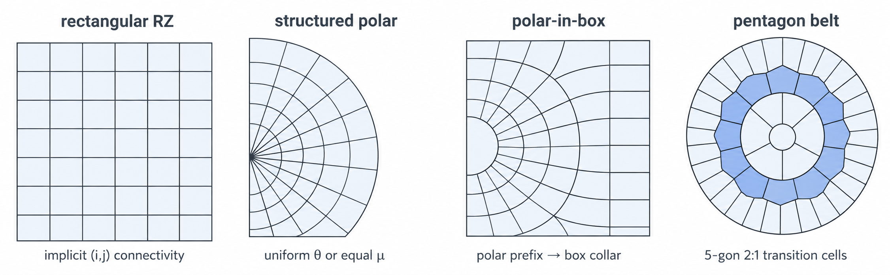

2D RZ meshes: structured & multiblock reference
The 2D path maps structured rectangular, spherical-polar, polar-in-box, and CSR-connected multiblock families onto one axisymmetric RZ geometry contract.
Physical mechanism
Every 2D family—rectangular, polar, polar-in-box, shell/collar multiblock, and pentagon belt—must deliver the same objects to the physics: revolved RZ cell volumes, exact corner geometry, and consistent node, cell, and face topology. Physics kernels do not know which builder produced the mesh. That is the meaning of one RZ geometry contract, and it allows a problem to select a family without changing those kernels.
The families solve different geometric problems. Rectangular RZ is the robust default; polar coordinates follow spherical convergence, and equal-solid-angle zoning equidistributes mass flux per ring. Polar-in-box reconciles a spherical target with a rectangular outer boundary, while multiblock shell/collar assemblies fit target hardware. Near a polar center, a pentagon belt absorbs a change in angular count into topology: five-sided transition cells replace degenerate TWO_TO_ONE junctions along a nested 2:1 ladder, solving a problem that smoothing alone cannot.
Mesh quality is an admissibility condition, not an aesthetic score. Minimum altitude and the corner Jacobian are invariants required by the volume, force, and remap operators. The guards therefore predictively limit the timestep and may reject a candidate state. A builder likewise fails loudly instead of returning a mesh whose orientation or positive-volume contract cannot be honored.
- Connectivity: single-block structured cells use implicit four-corner indexing. Multiblock families use CSR cell-to-node, reverse node-to-cell, and face-adjacency structures, with one owner-written shared node ID at each seam.
- Corner capacity: ordinary quadrilateral layouts use
corner_stride=4; the pentagon-belt scheme usescorner_stride=8andcell_nvertsidentifies the active slots. - Polar truncation: positive
polar_theta_minmakes the cut ray a mirror boundary while the opposite edge is snapped exactly to the \(R=0\) axis. - Equal-\(\mu\) zoning:
polar_equal_mu_zoningspaces angular nodes uniformly in \(\mu=\cos\theta\), giving equal solid angle rather than equal \(\theta\).
Structured 2D RZ layout
The default 2D setting, logical_mesh_2d="rectangular_rz", is a row-major structured grid with \(N_rN_z\) quadrilateral cells and \((N_r+1)(N_z+1)\) nodes. Cell \((i,j)\) is bounded by nodes \((i,j),(i+1,j),(i+1,j+1),(i,j+1)\); thermodynamic quantities live in cells, while positions and velocities live at nodes. Each meridional quadrilateral is evaluated as a revolved RZ volume, not merely as a planar area. Lagrangian motion or ALE rezoning can move the physical coordinates without changing the single-block logical \((i,j)\) connectivity.
Polar and multiblock families
A structured polar mesh maps \((s,\theta)\) to \((R,Z)=(s\sin\theta,s\cos\theta)\) over the half-plane and supports uniform \(\theta\), segment-defined zoning, or equal-solid-angle nodes through polar_equal_mu_zoning. With polar_theta_min>0, a tri-fan mesh is truncated to \([\theta_{\min},\pi]\); the cut ray is a mirror boundary and the opposite edge remains exactly on the \(R=0\) axis. Polar-in-box smoothly morphs an inner polar prefix to a rectangular boundary and closes it with box-aligned collar rings. Body-fitted shell/collar assemblies combine shells, near-wall strips, and gas fills as watertight blocks. Where the angular count changes toward the center, the pentagon-belt topology replaces a generic TWO_TO_ONE junction with five-vertex transition cells and subsamples the fine \(\theta\) ladder in a nested 2:1 pattern. Structured meshes use implicit four-corner indexing; multiblock meshes instead store cell-to-node, reverse node-to-cell, and face adjacency in CSR, with one owner-written shared node ID at each seam. Every cell supplies its active cell_nverts; ordinary layouts use corner_stride=4, while the polygon capacity for a pentagon belt uses corner_stride=8. This is a topology overview—consult the namelist reference for each builder's staged physics scope and constraints.

From namelist to accepted mesh
Select and validate. Choose the mesh family, then validate its radial, axial, or angular segment counts and endpoints.
Generate nodes. Build uniform, graded, or equal-\(\mu\) ladders as applicable, and snap required axis nodes exactly to \(R=0\).
Assemble topology. Use implicit indexing for a structured block or CSR connectivity for multiblock cells, with explicit ownership of shared seam nodes.
Check cells. Verify orientation and positive exact revolved RZ volume before the mesh can proceed.
Cache corner geometry. Construct the corner area vectors \(\mathbf S\) and minimum-altitude data required by the compatible operators and quality tests.
Hand off to hydro. Expose the common geometry/topology contract with the predictive minimum-altitude and corner-Jacobian guards armed.
Selected keys
These are the principal mesh and deck-side geometry entry points. See the namelist reference for complete validation rules and staged scopes.
| Key | Scope | Purpose |
|---|---|---|
Mesh.nr, nz, logical_mesh_2d | 2D | Logical resolution and selection of rectangular_rz, spherical_polar_halfplane, polar_in_box, or cone_shell. |
Mesh.grid_r, grid_z, grid_theta | 2D | Per-direction uniform/graded segments; polar θ segments can pin material or wall boundaries to faces. |
Mesh.polar_equal_mu_zoning | 2D polar | Generate equal-solid-angle nodes instead of uniform θ. |
Mesh.polar_theta_min | 2D polar | Default 0; a positive value truncates a tri-fan span to \([\theta_{\min},\pi]\). |
Verification
test_mesh_quality_dt_limiterand the in-hydro guard tests cover minimum-altitude/corner-\(J\) floors, unconstrained expansion, candidate-inversion rejection, and determinism.test_polar_truncated_spanfixes the \(\theta_{\min}\) start, mirror cut, positive volumes, analytic wedge volume, closed center fan, and bitwise determinism.test_h02_axis_exact_snapchecks exact \(R=0\) pole rows for annular, tri-fan, and button centers, plus exact equator and north–south mirrors where required.- Multiblock topology tests check shared seam-node IDs, bilateral/reciprocal CSR face-adjacency twins, reverse connectivity, and pentagon-belt vertex counts, orientation, and nested 2:1 θ zoning.
References
- P. M. Knupp, "Algebraic Mesh Quality Metrics," SIAM J. Sci. Comput. 23, 193–218 (2001). doi:10.1137/S1064827500371499 — background for the minimum-altitude and Jacobian quality measures used by the admissibility guards.